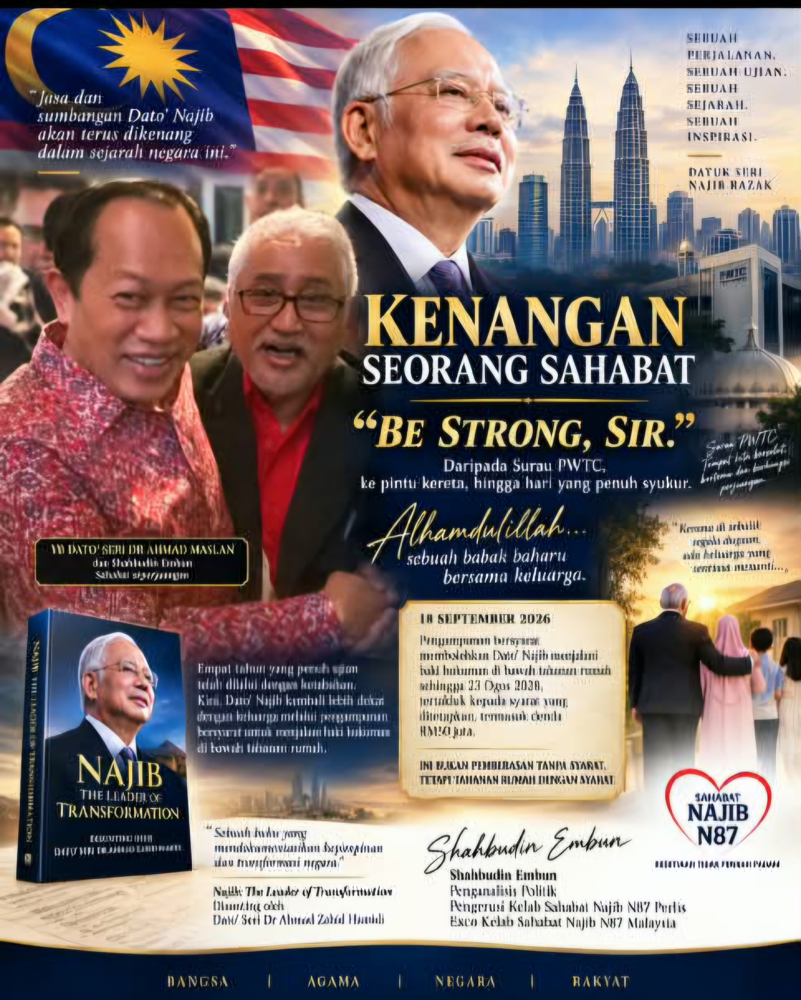

KENANGAN SAYA BERSAMA DATO’ SERI NAJIB RAZAK
Daripada Surau PWTC, ke Pintu Kereta, ke Empat Tahun Di Sebalik Tembok Penjara
Bismillahirrahmanirrahim.
18 September 2026 akan menjadi satu tarikh yang amat saya kenang.
Semalam, hati saya terasa begitu lega dan bersyukur apabila mendapat berita bahawa Dato’ Seri Najib Razak, bekas Perdana Menteri Malaysia, telah diberikan pengampunan bersyarat yang membolehkan beliau menjalani baki hukuman di bawah tahanan rumah.
Bagi saya, ini bukan sekadar sebuah berita politik.
Ini ialah sebuah berita yang menyentuh hati seorang sahabat yang telah mengikuti perjalanan hidup dan perjuangan Dato’ Najib selama bertahun-tahun.
Saya tahu bahawa tahanan rumah bukan bermakna beliau telah bebas sepenuhnya. Ia masih tertakluk kepada syarat dan peraturan tahanan yang ditetapkan. Namun, selepas kira-kira empat tahun menjalani hukuman di penjara Kajang sejak 23 Ogos 2022, kepulangan beliau ke pangkuan keluarga tentunya merupakan satu detik yang sangat bermakna.
Alhamdulillah.
MEMORI YANG TIDAK AKAN SAYA LUPAKAN
Saya telah bertahun-tahun berjumpa dan bersolat Jumaat bersama Dato’ Najib di Surau PWTC.
Lebih tujuh tahun saya melalui detik-detik itu.
Apabila beliau mula menghadapi proses mahkamah, saya tetap cuba berada di sisi beliau sebagai seorang sahabat.
Setiap kali saya bersalam dengan beliau, ada kalanya beliau berpesan kepada saya:
“Bantulah UMNO dan bantulah Dato’ Zahid.”
Dan jawapan saya kepada beliau pada ketika itu hampir selalu sama:
“Be strong, Sir.”
Beliau akan tersenyum dan memandang tepat ke wajah saya.
Itu satu memori kecil.
Tetapi bagi saya, ia sangat besar maknanya.
Ada ketika, apabila tidak ramai orang berada di sekeliling beliau, saya akan berdiri di sisi pintu keretanya. Saya akan melambaikan tangan sehingga kereta beliau hilang daripada pandangan.
Begitulah hubungan saya dengan beliau.
Tidak perlu banyak kata.
Kadang-kadang sebuah pandangan mata, sebuah senyuman dan sebuah lambaian tangan sudah cukup menggambarkan sebuah persahabatan.
“DATO’, PERTAHANKAN DATO’ SENDIRI”
Saya masih mengingati satu pertemuan dengan Dato’ Najib di sebuah restoran, kira-kira dua minggu selepas beliau mula menghadapi pertuduhan.
Ketika itu, saya bersama Dato’ Mustapha, Tok Baruh, dan beberapa sahabat lain.
Saya mengambil kesempatan memberikan satu pandangan kepada beliau.
Saya berkata lebih kurang begini:
“Dato’, tolong Dato’ pertahankan Dato’ sendiri. Jawablah isu-isu yang dibangkitkan oleh para blogger dan pengkritik dengan fakta kerana Dato’ mempunyai maklumat dan fakta yang berautoriti.”
Saya juga melihat bahawa akaun Facebook peribadi beliau mempunyai potensi yang sangat besar untuk menjadi saluran komunikasi terus dengan rakyat.
Dan selepas itu, media sosial Dato’ Najib memang berkembang dengan sangat pesat.
Facebook beliau menjadi salah satu saluran utama yang diikuti oleh ramai orang untuk mengetahui penjelasan, pandangan dan perkembangan daripada perspektif beliau sendiri.
Bagi saya, ini satu pelajaran penting:
Dalam era media sosial, seseorang pemimpin tidak semestinya perlu bergantung sepenuhnya kepada orang lain untuk menjelaskan pendiriannya.
Beliau sendiri boleh berkomunikasi terus dengan rakyat.
EMPAT TAHUN YANG PENUH UJIAN
Hari ini, apabila saya melihat kembali perjalanan Dato’ Najib sejak 2022, saya teringat kepada satu perkara:
Ketahanan seorang manusia hanya benar-benar dapat dilihat apabila dia diuji.
Hampir empat tahun berada di penjara bukan satu tempoh yang pendek.
Ia memerlukan kekuatan jiwa, disiplin dan ketabahan untuk melalui kehidupan dalam keadaan yang sangat berbeza daripada kehidupan seseorang yang pernah menjadi Perdana Menteri Malaysia.
Saya tidak mahu menjadikan pengalaman itu sebagai bahan untuk membangkitkan kebencian terhadap sesiapa.
Saya cuma mahu mengabadikan apa yang saya lihat daripada sudut seorang sahabat.
Seorang manusia yang pernah berada di puncak kepimpinan negara, kemudian melalui sebuah episod kehidupan yang sangat sukar.
Dan hari ini, beliau kembali lebih dekat kepada keluarganya melalui keputusan pengampunan bersyarat tersebut.
NAJIB DAN LEGASI TRANSFORMASI
Saya juga pernah menulis buku:
“Najib: Leader of Transformation”
Buku tersebut merupakan sebahagian daripada usaha saya mendokumentasikan kepimpinan dan transformasi Malaysia pada era Dato’ Najib sebagai Perdana Menteri.
Buku itu diedit oleh Dato’ Seri Dr Ahmad Zahid Hamidi, yang pada ketika itu merupakan salah seorang pemimpin kanan negara dan kini merupakan Timbalan Perdana Menteri .
Saya juga pernah mendapat pandangan dan idea daripada YB Dato’ Seri Dr Ahmad Maslan, yang ketika era pentadbiran Dato’ Najib pernah menjadi Timbalan Menteri Kewangan ketika Dato’ Najib sendiri memegang portfolio Menteri Kewangan.
Saya melihat tempoh hampir sembilan tahun Dato’ Najib sebagai Perdana Menteri sebagai satu bab penting dalam sejarah moden Malaysia.
Pelbagai dasar, projek pembangunan, hubungan antarabangsa dan agenda transformasi negara berlaku dalam tempoh tersebut.
Apa sahaja penilaian seseorang terhadap era itu, sejarah akan terus menilai rekod tersebut dari masa ke masa.
Dan bagi saya sebagai penulis, tugas saya ialah merekod apa yang saya lihat, apa yang saya alami dan apa yang saya percaya penting untuk generasi akan datang memahami sesuatu zaman.
DARIPADA PEMIMPIN KEPADA SEORANG AYAH DAN SUAMI
Hari ini, yang paling menyentuh hati saya bukan semata-mata soal politik.
Tetapi soal keluarga.
Seorang suami kembali lebih dekat dengan isterinya.
Seorang ayah kembali lebih dekat dengan anak-anaknya.
Selepas bertahun-tahun melalui kehidupan di sebalik tembok penjara, saya percaya bahawa saat-saat bersama keluarga akan mempunyai nilai yang sangat berbeza.
Dan saya berdoa agar tempoh seterusnya menjadi satu ruang untuk beliau menikmati ketenangan bersama keluarga, sambil terus mematuhi segala syarat dan peraturan yang ditetapkan.
SEBUAH MEMORI YANG AKAN KEKAL
Saya pernah menulis empat tahun lalu:
“Be strong, Sir.”
Hari ini saya ingin mengulanginya sekali lagi:
Dato’ Najib, be strong.
Hidup manusia mempunyai pasang dan surutnya.
Ada masa kita berada di atas.
Ada masa kita diuji.
Ada masa kita menangis.
Ada masa kita tersenyum.
Tetapi setiap perjalanan meninggalkan sebuah sejarah.
Saya bersyukur kerana pernah menjadi sebahagian kecil daripada perjalanan itu sebagai seorang sahabat, pemerhati dan penulis.
Saya juga bersyukur kerana masih diberikan kesempatan untuk melihat satu lagi bab dalam kehidupan Dato’ Najib terbuka.
Semoga Allah SWT memberikan beliau dan keluarga kekuatan, kesabaran serta ketenangan.
Semoga segala urusan beliau dipermudahkan dan segala syarat yang ditetapkan dapat dipatuhi dengan sebaik-baiknya.
Dan semoga pengalaman panjang ini menjadi satu catatan sejarah yang boleh direnungkan oleh generasi akan datang.
Terima kasih, Dato’ Najib, atas segala kenangan.
Daripada seorang sahabat yang pernah berdiri di sisi pintu kereta Dato’ di PWTC, melambaikan tangan sehingga Dato’ hilang daripada pandangan.
Be strong, Sir.
Alhamdulillah.
Ikhlas daripada,
Shahbudin Embun
Penganalisis Politik
Pengerusi Kelab Sahabat Najib N87 Perlis
Exco Kelab Sahabat Najib N87 Malaysia
19 September 2026